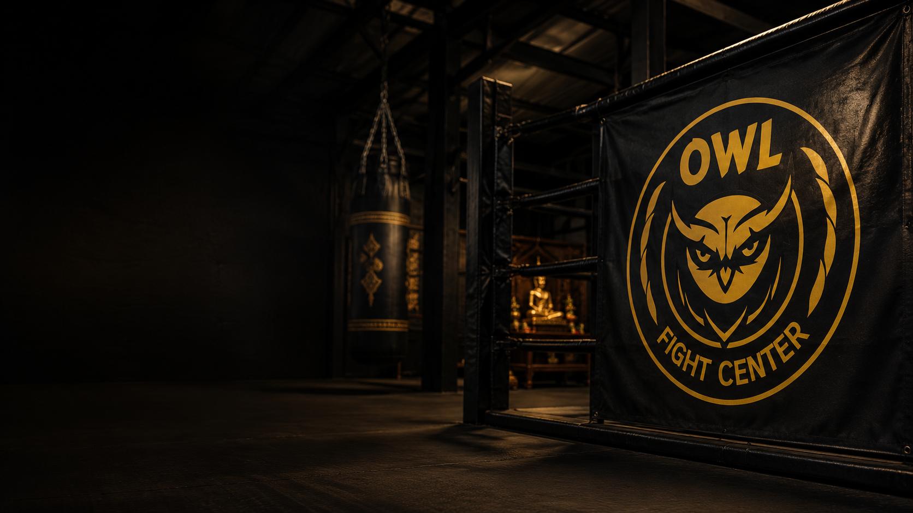

Tradição e técnica
História do Muay Thai
Uma página separada da landing principal para explicar a origem do Muay Thai, sua evolução histórica, seus rituais, os estilos de luta e o significado cultural de ser um Nak Muay.
Elementos marcantes
Wai Kru e Ram Muay: respeito ao mestre, à tradição e à arte.
Arte das oito armas: punhos, cotovelos, joelhos e canelas.
Nak Muay: o praticante que carrega disciplina, coragem e técnica.
Origem
Da antiga Sião ao esporte moderno.
O Muay Thai nasceu na antiga Sião, atual Tailândia, como um sistema de combate utilizado tanto em treinamentos militares quanto em disputas tradicionais. Suas raízes dialogam com o Krabi-Krabong, arte marcial tailandesa ligada ao uso de armas, e com a necessidade de continuar lutando mesmo quando o guerreiro estivesse sem espada ou lança.
Com o passar do tempo, a prática foi se transformando em expressão cultural e esportiva. Deixou de ser apenas uma técnica de sobrevivência e passou a representar honra, coragem, respeito ao mestre, disciplina corporal e identidade nacional.
Período tradicional
As lutas aconteciam em festivais e celebrações, muitas vezes em espaços abertos, sem o formato regulamentado que conhecemos hoje.
Modernização do esporte
No século XX surgiram regras mais definidas, uso de luvas, rounds, arbitragem e organização de ringues, aproximando o Muay Thai do cenário esportivo internacional.
Expansão mundial
Hoje o Muay Thai é praticado no mundo todo, tanto como modalidade competitiva quanto como ferramenta de condicionamento, defesa pessoal e desenvolvimento mental.
A arte das oito armas
Mais do que golpes: um sistema completo.
O Muay Thai é conhecido como a arte das oito armas porque combina quatro pares de ferramentas de ataque e defesa: punhos, cotovelos, joelhos e canelas. A riqueza da modalidade está justamente na forma como esses recursos se conectam com distância, tempo, postura e leitura de combate.
Punhos
Jab, direto, cruzado e combinações que abrem espaço e pontuam.
Cotovelos
Arma curta e precisa, muito importante em curta distância.
Joelhos
Essenciais no clinch, na pressão e na quebra de ritmo do adversário.
Canelas
Base dos chutes potentes, do controle de distância e da imposição física.

Tradições
Respeito, ritual e identidade.
Wai Kru: gesto de reverência e respeito ao mestre, à academia e à linhagem da arte.
Ram Muay: pequena dança ritual que antecede a luta e expressa concentração, tradição e personalidade do atleta.
Mongkhon e prajied: elementos simbólicos ligados ao ritual, à proteção e ao pertencimento dentro da prática.
Nak Muay: não é apenas “quem luta”. É quem incorpora disciplina, coragem, autocontrole e entrega ao treino.
Estilos de luta
Tipos de Nak Muay
Cada atleta tende a desenvolver um estilo predominante de acordo com suas características, sua estratégia e a forma como constrói sua luta.
Nak Muay
É o praticante ou lutador de Muay Thai — aquele que vive o treino, a tradição e a luta.
Muay Femur
Lutador técnico, estrategista, preciso, que pensa o combate e administra bem o ritmo.
Muay Khao
Especialista em joelhadas e clinch, pressiona bastante e desgasta o adversário.
Muay Mat
Mais agressivo nos punhos, busca potência, encurtamento de distância e imposição ofensiva.
Muay Tae
Tem nos chutes sua arma principal, controlando bem a distância e o tempo do combate.
Muay Sok
Especialista em cotoveladas, muito eficiente em curta distância e em ações rápidas.
Na prática
Treinar Muay Thai é construir controle.
O treino desenvolve coordenação, resistência, força, leitura de luta, autocontrole e confiança. Também ensina respeito, hierarquia, consistência e responsabilidade — valores que acompanham o aluno dentro e fora da academia.
Corpo
Condicionamento físico, mobilidade, resistência e potência.
Mente
Foco, disciplina, resiliência, coragem e clareza na tomada de decisão.
